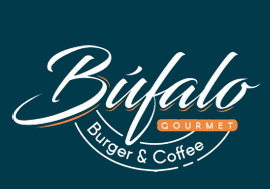

Búfalo Gourmet
Acceso al Sistema POS & SCM
Correo electrónico
Contraseña
Iniciar Sesión
➕ Crear este usuario en Supabase Auth
¿Prueba rápida local? Haz clic para autocompletar:
🔑 admin@bufalogourmet.com / bufalo2026